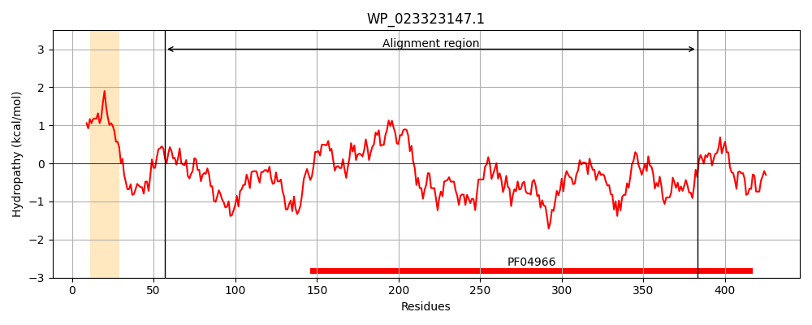
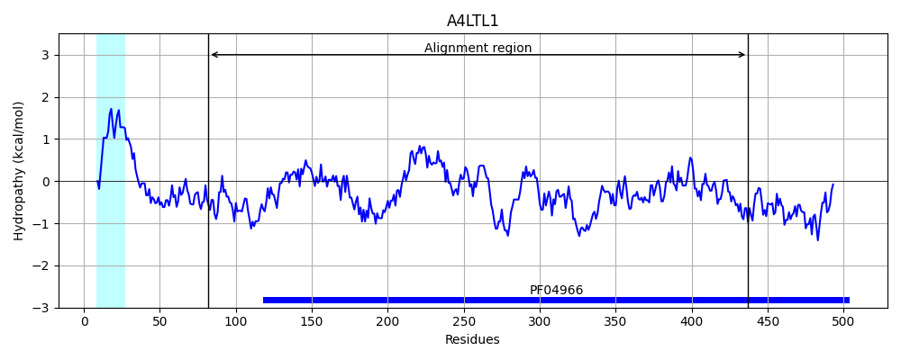

Hit Accession: A4LTL1
Hit TCID: 1.B.19.1.2
Hit Description: gnl|BL_ORD_ID|423 gnl|TC-DB|A4LTL1|1.B.19.1.2 Carbohydrate porin, OprB family - Burkholderia pseudomallei 305.
Mach Len: 378
e:0.000037
Query TMS Count : 1
Hit TMS Count: 1
TMS-Overlap Score: 0.000000
Predicted Substrates:CHEBI:83169;N-acyl homoserine lactone
BLAST Alignment:
Score: 106 , Bit scores: 45 bits, E-value: 3.7e-05, Alignment length: 378, Percentage identity: 21
Query: 57 SLIGDIGGFRSALADRGWGVQLSWNPMVMYDLKGQSADPQQYAGQSFTWSQNMSLNVTYDLSRIGFTKDAQFTFSPQWATSNYHDSYPELHNIAVLAVNQPLL------------------------NGQLELQYGFYPLIRQFYGMVLGGNSSSAALGPTSVIPVQVGISLNAPTPTFT-----AIVRDSEKKFYNNFAVSRSMSPAGHLDDVEQ-NPSGLKWHV-DGANPILVDEFGFKQPAGESQRSL-----WFRAGAIYNTSHY--QYFDQPG----DSSS---------NYAFYVANTVQLTQPKKGLPLGLYLDVKADYAPDDRNAYTSDFQVTFFDIGLFPGREQDMTSLGYTRSFISKKFRDYVGEAGM 383
+L GD+GG R+ L D G + L + +L G ++ Y G L++ GF+ D + T N S ++H ++ A N LL NG+ +++ G L ++F + +S + T PV + + A P + +R + A +PAG + D +Q N G +++ +GA I ++ P + + ++ G YN+ + +D G D +S NY FY + +P P L + + AP DRNA F GR+ D L + + I + R G+ G+
Sbjct: 82 NLFGDMGGLRTKLGDHGITLNLQETSEYLRNLSGGTSRGGAYDG----------------LTQFGFSVDTEKAIGLPGGTFNV--SGLQIHGTSLTARNLQLLQTASGIEAEATTRLWELWYQQSFANGRADVKVGQQSLDQEF----MVSQYASTFINATFGWPVLPAVDMPAGGPAYPLSSLGVRLRAKPSDAWTVMAGVFDGNPAGGVGDAQQLNRHGTNFNLRNGALFIGELQYALNAPPADPKAPQAGLPGMYKLGVWYNSERFADPRYDTNGVPLADPASNGVAATHRGNYGFYAVADQMVWRPGADSPRSLNVFARVMGAPGDRNAVDFTLNAGVTLKAPFAGRDNDTAGLAVSYAKIGSRARGADGDTGV 437 | Protein Hydropathy Plots: |
|---|
|  |  |
Pairwise Alignment-Hydropathy Plot:
|
|---|
 |